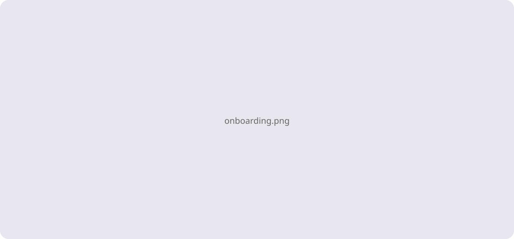

Onboarding process redesign

Pairing the form with editorial imagery reduced perceived effort. Field grouping and inline hints were tuned after a short round of usability tests on first-time visitors.

Pairing the form with editorial imagery reduced perceived effort. Field grouping and inline hints were tuned after a short round of usability tests on first-time visitors.